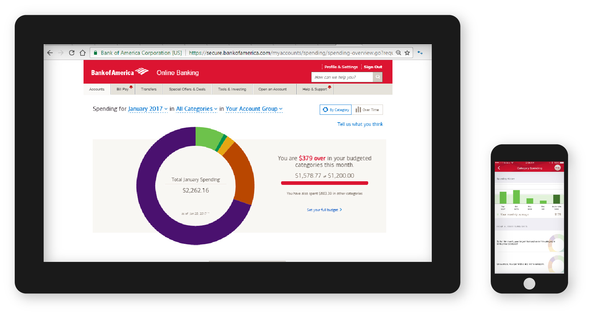
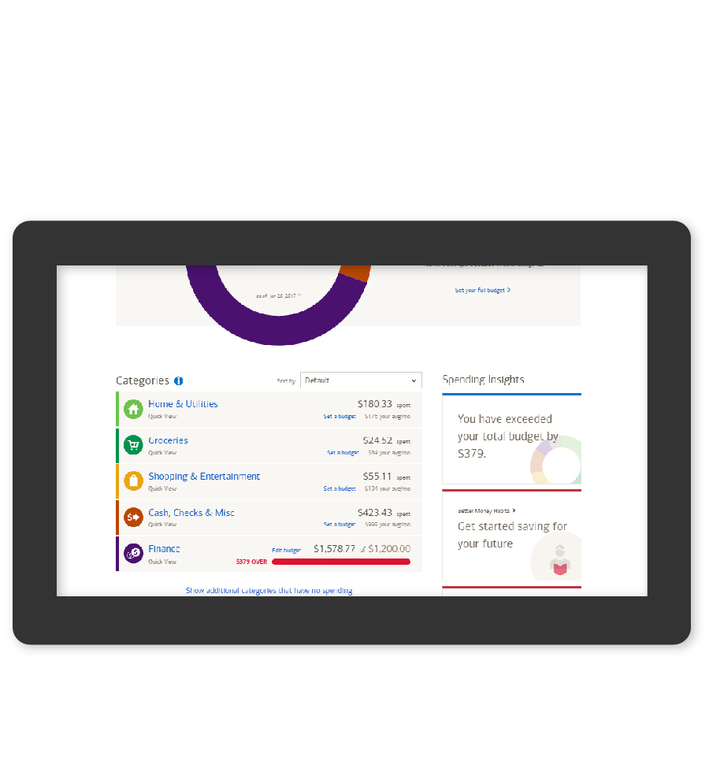

Bank of America
Budgeting Tools for User Accounts
- UX/Creative Direction
- UX Lead
- UX Design
Most people want to spend less, but figuring out where to start saving can be a challenge.
Bank of America provides its customers with spending analysis and budgeting tools, right in their online account. These tools let you see what categories you’re spending on, and helps find ways to cut costs. Most importantly, this information was presented in an understandable, human way.
User Journey Mapping
To create the budgeting tool, we needed to understand how people were using their accounts. Based on the data we had about the bank’s users, we created three high-level user journeys for representative user groups. These let us see when and why users were logging into their online banking accounts, and helped the team brainstorm new functionality that would be the most useful.
View the full user journeysUI Design
The budgeting tool visual design needed to be clean and inviting: financials can already be a daunting subject and we didn’t want to freak anyone out. Large, colorful graphics highlighted important basic information, with easy ways for users to dig in further.

Spending Insights
One of the goals of the project was to bring helpful articles from Bank of America’s education site, Better Money Habits, into user accounts. We did this by creating ‘insights’ based on the user’s spending habits that would provide links to Better Money Habits articles if relevant.
We defined logic for the insights by gathering the different data points we could get on user spending, consulting with tech people to find out what was feasible, and considering what information from this we could provide to users that would be helpful.
These insights were broken down by user action. The most common actions were awareness (no immediate action, but helps the user understand their spending habits), set a budget, or save a surplus from a budgeted category. This allowed us to choose with which insights Better Money Habits content would be most relevant.
Usability Testing
Once the visual comps were in good shape, we used an Invision prototype to test on usertesting.com. We wanted to get users’ overall impressions, and gauge their ability to navigate our workflows. Overall, users enjoyed the tools and found them easy to use!
Final Product
If you have a bank of America account, you can see the tools in action today. Log in and check them out under your accounts in the app or on the desktop site.
 A wide variety of account types and use cases to account for, balancing necessary complexity with ease-of-use
WinsAn approachable tool that gives users an easy way to understand and improve their spending habits